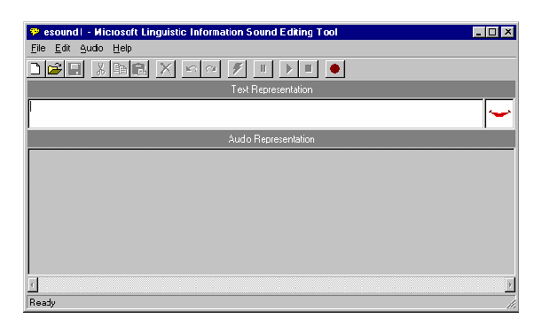
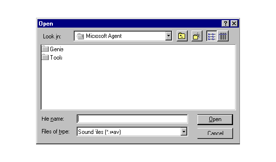
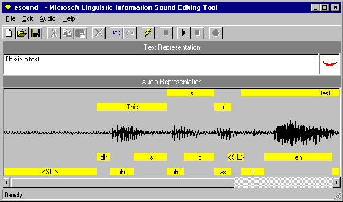
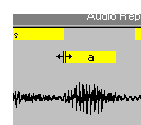
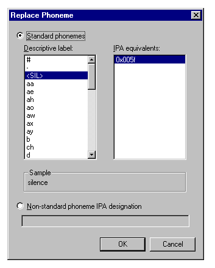
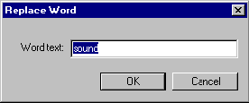
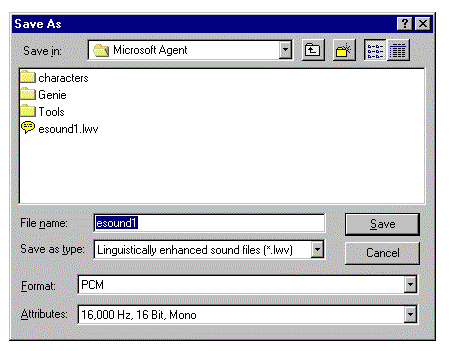

|
| ||
|
| ||
Microsoft Corporation
October 1998
 Download this document in Microsoft Word
(.doc) format (zipped, 60K).
Download this document in Microsoft Word
(.doc) format (zipped, 60K).
Contents
Introduction
Installing the Sound Editor
Starting the Sound Editor
Creating a New Sound File
Loading an Existing Sound File
Generating Linguistic Information
Saving a Sound File
Using the Editor with a Different Speech
Engine
Command Reference
Toolbar buttons
The Microsoft Linguistic Information Sound Editing Tool enables you to generate phoneme and word-break information for enhancing Windows sound (WAV) files to support high-quality lip-syncing character animation.
You can use linguistically enhanced sound files generated with the sound editor to support lip-syncing Microsoft Agent character output. To do so, simply pass the file as a parameter to the Speak
method. For further information, see Programming the Microsoft Agent Control or Programming the Microsoft Agent Server Interface.The recommended system configuration for using the sound editor is a PC with a Pentium® 166, at least 48 Megabytes of RAM, and a Windows® compatible sound card. If you want to record spoken input with the tool, you will also need a compatible microphone.
To install the Microsoft Linguistic Sound Editing Tool, open its self-extracting installation file. This will automatically install the appropriate files on your system. If you download the sound editor from the Microsoft Agent Web site, you can choose to install the editor after downloading or save it to your disk to be subsequently opened and installed. The installation tool will propose to install itself in the Tools subdirectory of Microsoft Agent. We recommend that you use this location.
The Microsoft Command and Control speech recognition engine (version. 4.0) must also be installed before you can use the sound editor. This normally gets installed with the sound editor, but if it was subsequently uninstalled, you can reinstall it from the Microsoft Agent Web site at http://msdn.microsoft.com/workshop/imedia/agent/agentdl.as p. The sound editor can only generate linguistic information based on the language supported by the speech engine. To generate information for other languages, a compatible speech recognition engine for that language must be installed. Contact your speech engine vendor to determine whether they support the Microsoft Linguistic Sound Editing Tool.
To run the Microsoft Linguistic Information Sound Editing Tool, choose it from the Start menu or double-click the sound editor's icon. The sound editor's window will open, displaying its menus, a toolbar for frequently used commands, a text box for entering the words the editor uses to process the sound file, and a display area for viewing and editing the audio and linguistic data.

Figure 1. Microsoft Linguistic Information Sound Editing Tool Window
Once the sound editor starts up, you can begin recording a new sound file or load an existing sound file.
When you first start the editor, you can create a new sound file by choosing Record from the Audio menu or clicking the Record button on the sound editor's toolbar, and then speaking into the microphone attached to your system. Click the Stop button on the toolbar to stop recording. You can select the Play command from the Audio menu or the toolbar to see how Microsoft Agent processes the sound file without linguistic enhancement. To create another new file, select New from the File menu or the toolbar.
You can also load an existing Windows sound file (WAV) or linguistically-enhanced sound file (.LWV) by choosing the Open command from the File menu or the toolbar. This displays the Open dialog box. Select a file and click Open to load the file into the editor.

Figure 2. The Open Dialog Box
Once you have recorded a new sound file, or loaded an existing sound file, you can generate phonetic and word-break information by entering text that corresponds to your sound file in the Text Representation box. Then choose the Generate Linguistic Info command from the Edit menu or from the toolbar. The sound editor displays a progress message and begins processing your sound file. When it finishes generating linguistic information, it displays a mapping of word and phoneme labels for the sound file in boxes in the Audio Representation box. Note that the Generate Linguistic Info command remains disabled until you enter a text representation for your sound file.

Figure 3. Word and Phoneme Labels Generated for a Sound File
If the editor doesn't produce an acceptable set of word or phoneme labels, choose the Generate Linguistic Info command again. If the editor does not generate any linguistic information, check your text representation to ensure that all the words are correctly ordered and spelled, and that you don't have any unnecessary spaces around punctuation. Then choose the Generate Linguistic Info command again. You can edit the text representation by selecting text in the Text Representation text box and using the Cut, Copy, and Paste commands on the Edit menu. If you are uncertain of the words the sound file includes, you can play the sound file by choosing Play from the Edit menu or the editor's toolbar. If the editor still fails to produce linguistic labels, try recording your sound file again. A poor quality recording, especially with excessive background noise, is likely to reduce the probability of generating reasonable linguistic information.
You can also manually create your own linguistic information by selecting part of the audio representation and choosing Insert Phoneme or Insert Word from the Edit menu. These commands are also available if you right-click within the selection.
To see how the linguistic information could be used for lip-syncing character animation with Microsoft Agent, choose the Play button on the toolbar and the editor will play your sound file, animating a sample mouth image based on the generated label information.
You can change the phoneme label display to show the IPA (International Phonetic Alphabet) assignments by choosing the Phoneme Label Display command on the Edit menu, then the IPA command. This displays the byte value for the phoneme. To change back to the descriptive names, choose the Phoneme Label Display command again, then choose Name.
You can play standard Windows sound files or linguistically enhanced sound files by choosing the Play command from the Audio menu or the editor's toolbar. The Pause and Stop commands enable you to pause or stop playing the sound file. As you play the file, the sample mouth image animates to show how the lip-sync information could be used by a Microsoft Agent character.
You can also play a selected portion of a sound file by dragging a selection in the Audio Representation or clicking a word or phoneme label, then choosing Play. You can extend an existing selection by pressing shift and clicking, or pressing shift and dragging to the new location in the Audio Representation.
You can edit a file's linguistic information in several ways. For example, you can adjust a word or phoneme label's boundary by moving the pointer to the edge of the box that defines the range of the label. When the pointer changes to the boundary move pointer, drag left or right. The editor automatically adjusts the adjacent word or phoneme boundary as well.

Figure 4. Adjusting a Word or Phoneme Label Boundary
Adjusting a phoneme label's boundary changes the timing of a phoneme when the audio plays. For characters developed for use with Microsoft Agent, changing the phoneme label boundary may change the timing or duration for a mouth image mapped to that phoneme. Changing the boundary of a word label changes the timing of the word's appearance in the character's word balloon.
You can also replace a phoneme assignment by selecting the phoneme label and choosing Replace Phoneme from the Edit menu, or right-clicking the phoneme label and choosing Replace Phoneme from the pop-up menu. The editor displays the Replace Phoneme dialog box and highlights the label's current phoneme assignment. You can choose a replacement phoneme by selecting one in the IPA list or by choosing another entry in the Name list. If more than one IPA translation is available for that name, choose an item in the IPA list. To enter an IPA designation for a phoneme that may not be directly included in the language, type in its hex value or multiple hex values, concatenated with a plus (+) character. Once you have selected the replacement phoneme information, choose OK, and the editor replaces the phoneme label you selected.

Figure 5. Replace Phoneme Dialog Box
Similarly, you can replace a word label by clicking the label's box and choosing Replace Word, or by right-clicking the label's box and choosing Replace Word from the pop-up menu. The editor displays the Replace Word dialog box. Enter the replacement word and choose OK.

Figure 6. Replace Word dialog box
For characters developed for use with Microsoft Agent, replacing a phoneme label may change the mouth image displayed when the sound file plays. Replacing a word replaces the text that appears in the character's word balloon when the Speak
method is called.You can also insert a new phoneme label or word by making a selection in the Audio Representation and choosing Insert Phoneme or Insert Word from the Edit menu, or right-clicking within the selection and choosing the commands from the pop-up menu. These commands bring up dialog boxes similar to the Replace Phoneme and Replace Word dialog boxes, except that the editor inserts the new word or phoneme rather than replacing the existing information.
Finally, you can delete a phoneme or word by selecting its label and choosing Delete Phoneme or Delete Word. This removes its linguistic information from the file.
When you are ready to save your sound file, choose the Save command on the File menu or on the editor's toolbar. The editor displays the Save As dialog box and proposes a name and default file type based on whether you generated linguistic information for the file. If you save the file as a sound file (WAV), the editor saves just the audio data. If you save the file information as a linguistically enhanced sound file (.LWV), the word and phoneme information are automatically included as part of a modified sound file. Once you have confirmed or edited the name, location, file type, and format, choose the Save button.

If you want to save a sound file with a new name, different location, or different format, choose the Save As command on the File menu. When the Save As dialog box appears, type in the new filename and click the Save button.
You can also save a portion of the sound file. For example, you may want to save the file without excessive silence at its beginning or end. In the Audio Representation, select the portion of the file you want to save, and choose Save Selection As from the File menu. The command is enabled only when you have a selection in the Audio Representation.
While the sound editor installs the Microsoft Speech Recognition Engine (4.0), it may be used with another speech engine, it that engine supports the required interfaces documented in the Speech Engine Requirements document. Before attempting to use the editor with another engine, confirm with your vendor that they comply with these requirements.
To use the sound editor with another speech engine, choose the Speech Engine command on the Edit menu. This displays a dialog box that shows the current engine in use. To choose another engine, display the list of engines, then click OK. If there are no other engines listed, then you do not have any other compatible engines included.
New
Resets the sound editor for creating a new enhanced sound file. If an existing sound file is loaded and has unsaved edits, the sound editor displays a message to determine whether to save or discard unsaved changes.
Open
Displays the Open dialog box, enabling you to open an existing sound file. If an existing sound file is loaded and has unsaved edits, the sound editor displays a message to determine whether to save or discard unsaved changes.
Save
Saves a sound file. If the sound file does not exist (has not been named), the sound editor displays the Save As dialog box for input of the filename.
Save As
Displays the Save As dialog box, enabling you to enter a new name for the sound file.
Save Selection As
Displays the Save Selection As dialog box, enabling you to enter a name for the selected part of the sound file.
Most Recently Open Files
Keeps track of the recent character definition files you opened. Choosing a file automatically opens that file for editing. If an existing character is loaded and has unsaved edits to a file, the sound editor displays a message to determine whether to save or discard unsaved changes.
Exit
Quits the sound editor. If an existing file is loaded and has unsaved edits, the sound editor displays a message to determine whether to save or discard unsaved changes.
Undo
Removes a change made in the sound editor.
Redo
Reverses an undo action in the sound editor.
Cut
Removes the selected text and places it on the clipboard.
Copy
Copies the selected text to the clipboard.
Paste
Copies text on the clipboard to the insertion point or selection in the Text Representation text box.
Delete
Removes the selected text.
Select All
Selects the text in the Text Representation text box.
Generate Linguistic Info
Begins generating word-break and phoneme information for a sound file.
Insert Phoneme
Displays the Insert Phoneme dialog box that enables you to insert a selected phoneme label.
Replace Phoneme
Displays the Replace Phoneme dialog box that enables you to replace the selected phoneme label.
Delete Phoneme
Deletes the selected phoneme label.
Insert Word
Displays the Insert Word dialog box that enables you to insert a word label in the Audio Representation.
Replace Word
Displays the Replace Word dialog box that enables you to replace the selected word label in the Audio Representation.
Delete Word
Deletes the selected word label in the Audio Representation.
Phoneme Label Display
Changes the phoneme label display between descriptive names and IPA byte values.
Speech Engine
Enables you to change the speech engine you use to generate the word break and phoneme information.
Play
Plays the sound file or selected portion of the sound file.
Record
Records a new sound file.
Pause
Pauses the play of the sound file or selected portion of the sound file. Use Play to resume playing.
Stop
Stops recording or playing the sound file or selected portion of the sound file.
Help Topics
Displays the Help Topics dialog box, enabling you to select a sound editor help topic.
About Microsoft Linguistic Sound Editing Tool
Displays a dialog box with copyright and version information for the sound editor.
New
Resets the sound editor for creating a new sound file. If an existing sound file is loaded and has unsaved edits, the sound editor displays a message to determine whether to save or discard unsaved changes.
Open
Displays the Open File dialog box, enabling you to open an existing sound file. If an existing sound file is loaded and has unsaved edits, the sound editor displays a message to determine whether to save or discard unsaved changes.
Save
Saves the sound file. If the file does not exist (has not been named), the editor displays the Save As dialog box for input of the filename.
Cut
Removes the selected text from the editor and places it on the Windows Clipboard.
Copy
Copies the selected text in the editor to the Windows Clipboard.
Paste
Copies text from the current Windows Clipboard to the selected location in the Text Representation text box.
Delete
Removes the selected text from the sound editor.
Undo
Removes a change made in the sound editor.
Redo
Reverses an undo action in the sound editor.
Generate Linguistic Info
Generates phoneme and word labels for the sound file.
Pause
Pauses playing of the sound file.
Play
Plays the sound file or selected portion of the sound file.
Stop
Stops recording or playing the sound file or selected portion of the sound file.
Record
Starts recording a sound file.
Did you find this material useful? Gripes? Compliments? Suggestions for other articles? Write us!
© 1999 Microsoft Corporation. All rights reserved. Terms of use.